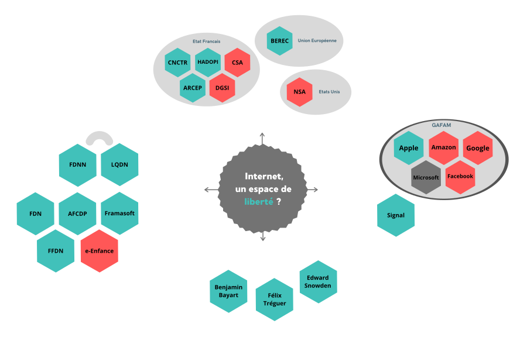
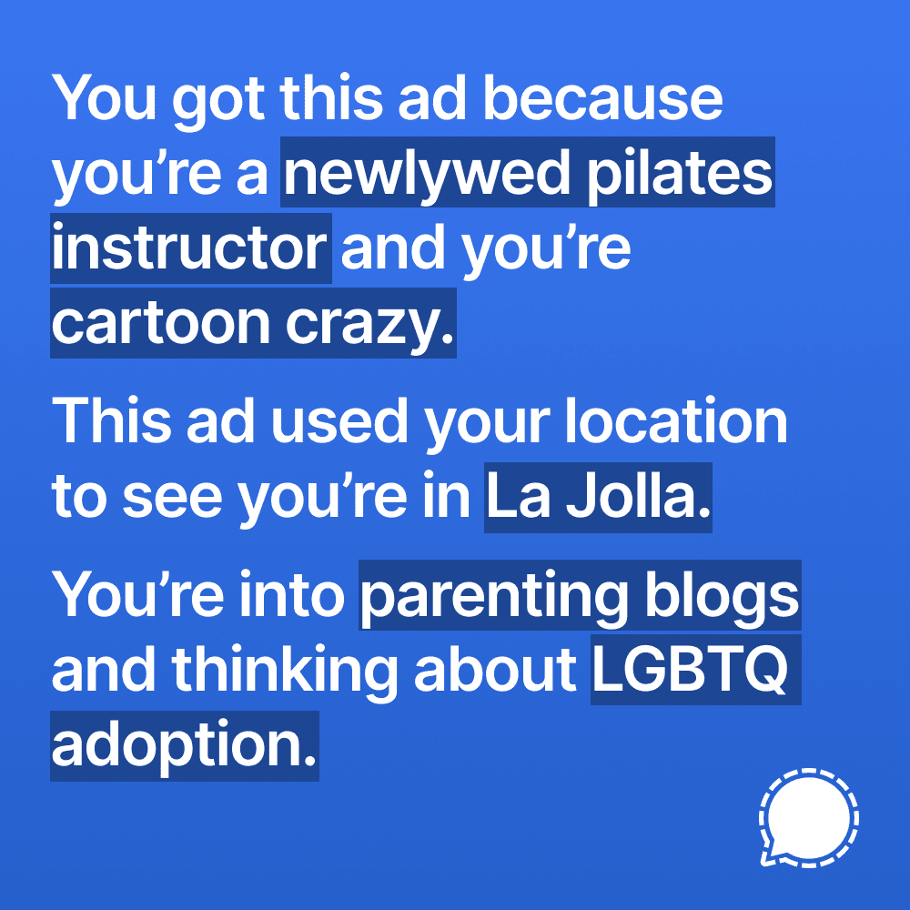

Afin de comprendre le grand enjeu de cette controverse dans sa globalité, il est très intéressant de
se rendre compte de la multiplicité des acteurs ainsi que de leurs interactions entre eux, qu'elle
soient politique, économique ou se portant simplement sur les valeurs. Cette page à pour but de
lister et cataloguer les acteurs les plus importants pouvant expliquer le paysage actuel de cette
controverse.

Politique
Impossible d'éviter l'aspect politique autour de la question de la liberté. Les questions touchant à
la liberté ont toujours eu des échos philosphique et politique. Quand on parle de liberté sur
internet, on fait très souvent référence au concept de liberté d'expression, très
chère à la France. Internet permet en effet de donner accès à tous à la parole publique. C'est
justement sur cette ouverture que s'opposent différents acteurs. Quelle place donner à l'expression
des utilisateurs ? Comment la protéger tout en régulant les contenus selon la loi ? Il existe dans
le paysage politique de nombreuses instances ayant pour rôle d'essayer de répondre à ses questions,
l'Etat ayant un rôle ambivalent de gardien et de contrôleur.
ARCEP
l'Autorité de régulation des communications électroniques, des postes et de la distribution
de la presse est une AII
créée en 1995. Cette autorité est née de la volontée de s'assurer qu'une entreprise ou un
gouvernement ne puisse réduire la capacité d'échange et la liberté des citoyens sur les
réseaux dont elle a la charge, elle se définit d'ailleurs comme « architecte et
gardienne des réseaux d’échanges comme biens communs ». C'est notamment l'ARCEP qui
est chargé de veiller sur la Neutralité du Net en France (voir problématiques).
BEREC
Le Body of European Regulators for Electronic Communications ou en Français, L'Organe
des régulateurs européens des communications électroniques peut être vu comme l'équivalent
de l'ARCEP mais cette fois-ci au niveau Européen. Crée en 2010, cet organe consultatif sert
à aiguiller les décisions de la Commission européenne sur les questions des télécoms
et notamment d'internet. Cet organe à un rôle d'arbitrage sur des différents, de
garde-fou pour protéger les consommateurs, mais aussi de guide sur des questions telles que
la Neutralité du Net.
CNCTR
La Commission Nationale de Contrôle des Techniques de Renseignement est une AII
crée en 1991 (précédemment connue comme CNCIS)
après le scandale des écoutes de l'Elysée, elle a notamment comme rôle de faire un
contrôle sur la légalité de la surveillance ainsi que les techniques de mise en
place de cette dernière.
HADOPI
Impossible de faire l'impasse sur la Haute autorité pour la diffusion des oeuvres et la
protection des droits sur Internet. Crée en 2010 par la loi éponyme, cette AII
a notamment pour but de veiller à la bonne distribution des oeuvres sur internet en
respect de la propriété intellectuelle en luttant contre le piratage. Cette
instance est régulièrement sous le feu des critiques, comme celle de La Quadrature Du Net,
trouvant la HADOPI « inadapté à l’ère numérique, qui refusent de voir que le partage est au
fondement même de la culture et de la création ».
Association
Dans cette controverse gravite beaucoup d'associations aux buts multiples. Ces associations sont
importantes car elle représente un mouvement (ainsi qu'une volonté de participer à ce débat) venant
d'anonymes, parfois expert dans les technologies de l'information, parfois pas du tout.
La Quadrature Du Net
La Quadrature Du Net (en abrégeant, LQDN) est une association crée en 2008 défendant les
droits et libertés sur internet. Ils se décrivent sur leur site internet comme «
oeuvrant pour un internet libre, décentralisé et émancipateur. ». C'est une
association très active tant sur le plan médiatique que juridique (un de ses premiers combat
en date a été la loi HADOPI par exemple).
Amnesty International
Plutôt connue pour leurs combats pour la libération des prisonniers politiques, pour la
liberté d’expression ou encore l’abolition de la peine de mort, Amnesty International est
néanmoins très actif sur le domaine des libertés sur Internet. Cela, notamment en rapport
avec la liberté d’expression et la censure exercée par les gouvernements comme montré au
travers de leur projet #UNFOLLOWME.
Amnesty est aussi active sur le sujet en France en demandant l’interdiction des systèmes
permettant la surveillance globalisée en déclarant que« Ceci porterait une atteinte
disproportionnée au respect du droit à la vie privée. Nous demandons donc que la France
écarte explicitement la possibilité d’y recourir ». De plus, Amnesty a récemment
vivement critiqué la loi « sécurité globale » qui a réduit la liberté d’expression et qui
par conséquent présente un risque majeur pour la liberté de s’informer.
Framasoft
Framasoft est une association crée en 2001 se concentrant sur la promotion, le développement
et la diffusion de logiciels libres. Le but affiché de Framasoft dans leur charte est d'aller vers un
internet plus libre, plus éthique et solidaire. Le mode d'action de Framasoft pourrait être
résumé par une citation de Benjamin Bayart: « Si on libère le
code, on libère l'informaticien, si on libère la donnée, on libère l'utilisateur ».
FDN
French Data Network est une association sans but lucratif étant aussi le plus ancien FAI de
France encore en activité. Cette structure fonctionne bénévolement ayant pour but
« la promotion, l’utilisation et le développement des réseaux Internet dans le
respect de leur éthique, en favorisant les utilisations à des fins de recherche et
d’éducation sans volonté commerciale ».
Fédération FDN
A ne pas confondre avec le French Data Network (FDN)
La Fédération FDN regroupe des FAI associatifs ayant comme valeurs la solidarité, un
fonctionnement démocratique et à but non lucratif ainsi que défense du concept de la
neutralité du net.
FDN²
A ne pas confondre avec le French Data Network (FDN)
Le Fonds de Défense de la Neutralité du Net est une association qui récolte des fonds afin
de financer des projets visant à défendre et sauvegarder la liberté d'expression ainsi que
la neutralité du net. C'est notamment cette association qui a permis de financer La Quadrature Du Net.
e-Enfance
Beaucoup d'associations oeuvrant dans le domaine de la protection des communautés vulnérables
(comme les jeunes enfants) ont intégré internet dans leurs actions de sensibilisations.
C'est notamment le cas de l'Association de protection de l'enfance sur internet. Cette
association fait prévaloir la surveillance pour le bénéfice des enfants, notamment via
l'utilisation de contrôle parentale ou de modération des contenues pour prévenir le
cyber-harcelement par exemple.
Entreprise
Les entreprises sont évidemment des acteurs important de part leur poids économique et leur
influence dans leurs domaines.
GAFAM
Les GAFAM sont évidemment une pièce centrale dans notre controverse car touchant absolument
à tous les points qui ont pu être relevés au fil de nos recherches. En effet, l'internet que
nous connaissons aujourd'hui est régulé par des entreprises privées, souvent américaines
(voir la problématique sur la Centralisation). Sous le terme GAFAM
on regroupe évidemment les sociétés qui compose cet acronyme (Google, Apple, Facebook,
Amazon & Microsoft) mais aussi toutes les autres sociétés importantes dans le domaine des
technologies d'information (citons Baidu et Alibaba par exemple).
Signal Technology Foundation
La Signal Technology Foundation, est une organisation américaine sans but lucratif créée en
2018. Sa mission est de « développer les technologies open source qui protègent la
vie privée et la liberté d'expression tout en permettant la communication sécurisée au
niveau mondial ». Cette fondation finance l'Entreprise Signal Messenger qui
s'occupe du développement de l'application de messagerie Signal. Cette application connait
aujourd’hui un énorme succès cumulant 40 millions d'utilisateurs dans le monde, Signal était
devenue la première application téléchargée dans 70 pays. Signal est aussi une société très
engagée dans la défense des libertés sur internet, par exemple avec leur dernière campagne
de pub sur Facebook pour dénoncer la collecte des données des GAFAM.

Une publicité de Signal sur Facebook
Personnalités influentes
Benjamin Bayart
Benjamin Bayart est un ancien élève de l'ESIEE Paris, militant pour les libertés
fondamentales
sur internet et est une figure importante du paysage associatif français. Il occupe
actuellement le poste de président de la Fédération FDN. Il est le
co-fondateur de La Quadrature Du Net et membre de son conseil
stratégique ainsi que le président du Fonds de Défense de la Neutralité du
Net.
Edward Snowden
Edward Snowden est un lanceur d'alert américain ayant révélé le scandale de la surveillance
massive de la NSA, la National Security Agency. L'affaire Snowden est importante pour cette
controverse car son impacte a été telle que l'on parle souvent, quand on parle des
libertées liées aux technologie, de l'ère post-snowden. Véritable symbole d'une prise de
conscience massive sur ce qu'est véritablement l'utilisation "cachée" qui était faite
d'internet et de son impact invisible sur les libertés. Il a d'ailleurs justifié son geste
comme ceci : « Je ne peux pas, en conscience, laisser le gouvernement américain
détruire la protection de la vie privée, la liberté sur Internet et les libertés de base
dans le monde avec la machine de surveillance qu'il est en train de construire. ».
Félix Tréguer
Félix Tréguer est un chercheur associé au CNRS ainsi que membre fondateur de La Quadrature
Du Net. Ses recherches portent sur les sujets qui sont au coeur de cette controverse :
l'histoire politique d'internet, la surveillance, l'utilisation d'algorithmes dans
l’espace public et la transformation numérique de l'Etat.